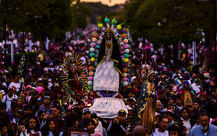
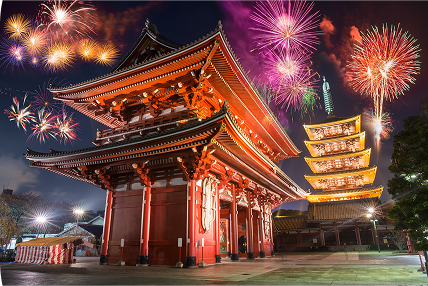

Tradiciones de México
Conecta con su cultura y sus celebraciones.
Descubre un destino, encuentra tu lugar y empieza a darle forma a tu viaje.
Prueba con otro nombre, elige otro país o guarda tu primer destino.
Tradiciones, luces y sabores que vale la pena descubrir.

Conecta con su cultura y sus celebraciones.

Otra forma de vivir sus ciudades.
Encuentra inspiración en sus festivales.